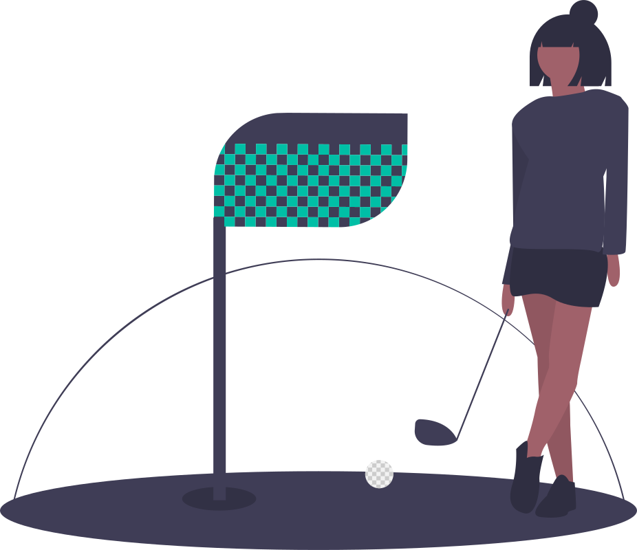

4 意思決定アプローチの方法
2023年度 管理会計
4.1 Case
4.1.1 Hamiltonとスーパーのお惣菜コーナー
Hamilton(Datar et al. 2021)
ブロードウェイミュージカルの制作者にとって，顧客が一人増えることによるコストの増加は限りなくゼロに近い。
多くの原価（俳優のギャラ，舞台セット，劇場の使用料，広告宣伝費）などは，上映されるよりも何週間も何ヶ月も前に確定している。
今，ハミルトンのチケットは1枚200ドルで販売されている。顧客あたりの追加的コストは小さいけれど，もし直前まで空きがある場合，プロデューサーは，チケットを値引きして販売するべきだろうか？

スーパーのお惣菜コーナー
- ミュージカルと違って，個々の製品に材料費や人件費がかかっている。
- なぜ，どんなロジックで値引き販売されるのだろうか？
- ミュージカルと同じ？それとも違う？
日常は意思決定に溢れている
- コーヒーを買うかどうか
- 夕飯何にするか
管理会計情報は，この意思決定に有用な情報を提供しうるけれど，全ての情報が有用なわけではない。
- コーヒーメーカーを買った時の購入価格は，「自分でコーヒーを淹れるとスターバックスでコーヒーを買うのに比べてどれぐらいお金を節約できるか」という意思決定には役立たない。
管理会計に期待される役割の1つである意思決定支援機能について考えます。
4.2 企業における意思決定問題
様々な意思決定を行う
- 設備投資の決定
- セールズミックスの決定
- 販売価格の決定
- 部品や製品の自製・購入の決定
- 計画と実際の業績が異なるとき，調査をするかどうか，調査を受けて是正行動をとるかどうか
これらの意思決定は，勘や当てずっぽうで決めているわけではない
様々な情報を集めて分析して決める（はず）
じゃあ，どんな情報をどんなふうに集めて，どんなふうに分析するのか？
4.2.1 意思決定のプロセスで管理会計情報はどのように役立つのか
問題の認識・分析に対する役割
一般的に意思決定のプロセスは，
- 問題の認識と分析
- 代替案の探索
- 代替案の評価
- 代替案の選択
4.2.2 例
設定
ゴルフクラブの製造を行うS社では，製造プロセスを見直すかどうかを決めかねている。見直しのための案は，全ての材料管理・運搬作業をなくすもの。現在の工程には，機械操作を行う15名の労働者と，材料の管理・運搬を行う5名が配置されている。材料の管理・運搬担当の5名は，追加コストなしにレイオフできる契約を結んでいる。各従業員は，年間2,000時間働いている。プロセスの見直しは，年間90,000ドルかかると見込まれている（これのうちほとんどが新しい機械のリース料）。また，この見直しは25,000個という現在の製造量や，１つ当たり250ドルという販売単価，50ドルの直接材料費，750,000ドルの製造間接費，そして2,000,000ドルのマーケティングコストには影響を与えない。

①問題の認識と分析，代替案の探索
- 問題の認識の契機は様々。競合他社の動向や顧客調査の結果，新技術の出現，景気の動向など。
- 問題を認識すると，それを分析した上で設備投資の必要性等を検証する。この際には，現在のコスト情報や予算情報などの管理会計情報や，競合他社の業績，技術情報などのデータが使われる。
- これらの情報をもとに，代替案と，それを評価する基準が設定される
S社は製造プロセスの見直しを行うべきか？
- 見直した場合のコスト面の影響は？
- 見直した際に従業員のモラルにどんな影響がありそうか？
S社では，時給14ドルで労働者を雇用していた。しかし，最近の労使交渉で時給が16ドルに値上げされた。今回の工程見直しは，20名体制を15名にするもので，その分の人件費削減が見込まれる。ただし，レイオフは残った従業員のモラルに悪影響を与える可能性がある。
②代替案の評価
- 得られた情報，例えば現在のコスト，契約情報などをもとに，各代替案での将来予測を行う。
- 現状の人件費は640,000ドル（20名×2,000時間×16ドル/時間）
- 見直しを行った場合，480,000ドル（15名×2,000時間×16ドル/時間）
- 設備のリースは90,000ドルだった
③代替案の選択
- 得られた情報のうち，意思決定に有用なものを使って選択する
- 従業員のレイオフにより節約されるコストは640,000 - 480,000 = 160,000ドル
- リース料は90,000ドル
- レイオフにより残った従業員に与える悪影響（計算は難しい）
- S社は，70,000ドル（90,000ドル - 160,000）の節約効果は従業員への悪影響の可能性等を差し引いても大きいものだと判断し，工程の見直しを行った
④選択後の評価
- 意思決定の後，その結果が当初の予測通りだったのか，そうでなかったのかは会計情報を使って評価が可能（ただし，行われていない場合も多い）
- 実際にかかった人件費は，予想されていた480,000ドルを上回る540,000ドルだった。
- これは，従業員の生産性が期待されていたよりも低かったこと（= モラルの低下）が原因であるということだった。
- この情報は，次回の意思決定に活かされる
4.3 差額分析の原価概念
- 意思決定の際に原価や売上，単価，利益といった会計情報が使われる。
- 現状と代替案の比較を行う際には，現状と代替案との差額を検討するので，差額分析，と呼ばれる。
- 差額分析の際に使われる概念
- 関連原価・無関連原価，差額原価
- 埋没原価
- 機会原価
4.3.1 関連原価・無関連原価，差額原価
- 意思決定に関連する原価情報を関連原価（relevant cost），逆に関連しない原価を無関連原価という
- 現状と代替案で変わる原価を差額原価（differential cost）という。
- 収益の場合差額収益，利益の場合差額利益
- 差額原価に影響を与えるのが，関連原価
4.3.2 埋没原価
- 埋没原価（sunk cost）
-
すでに支出済みで，しかも回収不能な原価
- 例えば固定資産の減価償却費
- 過去に固定資産を取得した際の支出に起因して生じている
- 現状のままでも費用として毎年計上されるし，売却しても未償却高が売却の際に一括計上される
ここで辞めてしまうと今までの投資が無駄になる
というのは基本的には間違い。

4.3.3 機会原価
- 機会原価（opportunity cost）
-
資源の利用に関する意思決定において特定の代替案を選択すると，別の代替案の利用可能性が減少したり，又は失われたりする結果，犠牲となる最大の利益（最大の価値犠牲）を原価として認識したもの
- 機会損失
-
最善の代替案があったにも関わらず，それを選ばなかったという誤った意思決定を行なったため，被った損失
あるものを選んだ結果失われる価値
農業ビジネスか，宿泊ビジネスか，飲食ビジネスに進出したい。資金の関係上どちらか一つを選ばなければならない。以下が各ビジネスで予想される業績である。
- 農業ビジネスを始めた場合，収益が8,000万円，費用が5,000万円かかり，利益が3,000万円
- 宿泊ビジネスを始めた場合，収益が9,000万円，費用が8,000万円かかり，利益が1,000万円
- 飲食ビジネスを始めた場合，収益が7,000万円，費用が5,000万円かかり，利益が2,000万円
上の他の費用がないものとすると，農業ビジネスを選んだときの機会原価と機会損失は？
4.4 例題
ある小さな会社が，赤いペンと青いペンを製作していました。ペンは材料費と作業員の人件費合わせて１本あたり15円で作ることができます。機械を使って作るが，この費用100,000円がペンの色や量に関係なくかかります。
ある経営コンサルタントが「正確な１本あたりの原価を計算するべきだ」と言いました。結果は以下の通りです。
この結果を見てコンサルタントは「青いペンは赤字だ。青いペンの生産はやめるべきだ」とアドバイスしました。

このコンサルタントのアドバイスの誤っている部分とその理由について，数値を示しながら説明してください。